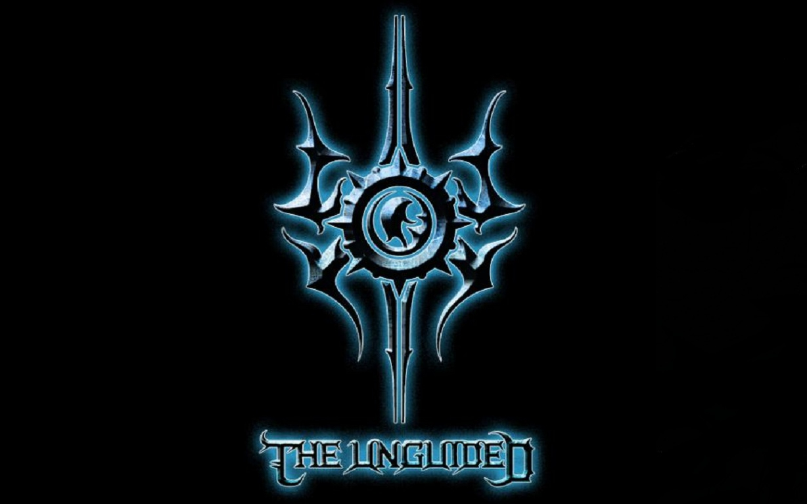
The Unguided to szwedzki zespół metalcore, założony przez Richarda Sjunnessona, Rogera Sjunnessona, Rolanda Johanssona i Johna Bengtssona,
wszyscy oni byli członkami zespołu Sonic Syndicate. Później dołączył do nich basista zespołu Cipher System. Later, they were joined by Cipher System bassist Henric Liljesand.
Bengtsson został zastąpiony przez Richarda Schilla pod koniec 2021 r., Johansson został zastąpiony przez Jonathana Thorpenberga w 2016 r.
STRONA ZESPOŁU:
the-unguided.com
CZŁONKOWIE ZESPOŁU:
Aktualni członkowie:
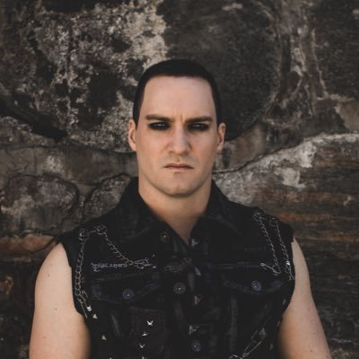
Richard Sjunnesson
scream vocals
2010 - teraz
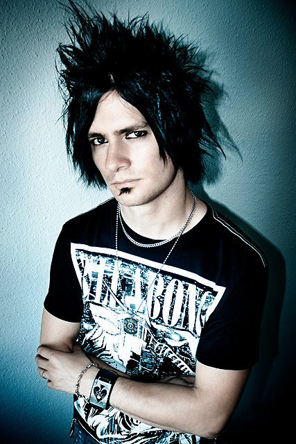
Roger Sjunnesson
rhythm guitar, keyboards
2010 - teraz
Jonathan Thorpenberg
clean vocals, lead guitar
2016 - teraz
Richard Schill
drums
2012 - teraz
Byli członkowie:
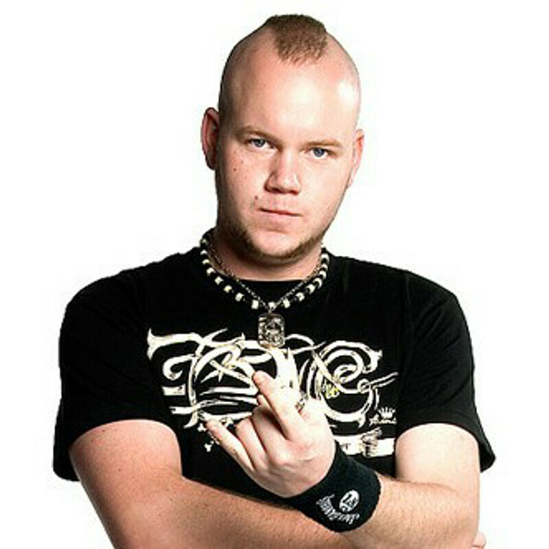
John Bengtsson
drums
2011 - 2012
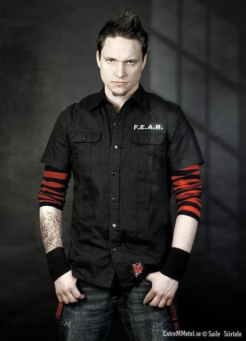
Roland Johansson
lead guitar, clean vocals
2010 - 2016
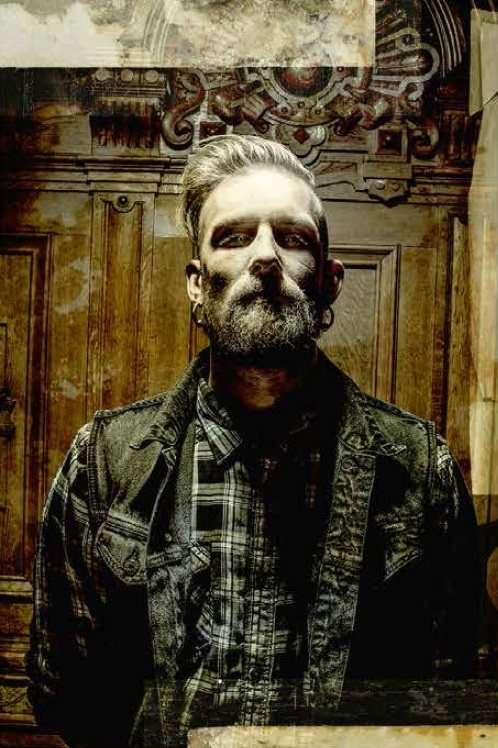
Henric Liljesand
bass
2011 - 2020
DYSKOGRAFIA
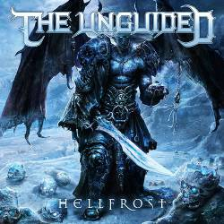
Hell Frost
20 Listopad 2011

InvaZion
21 Grudzień 2012
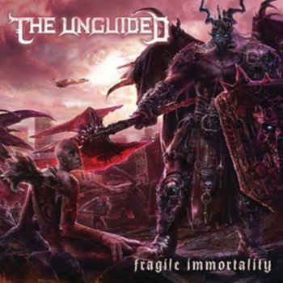
Fragile Immortality
5 Luty 2014
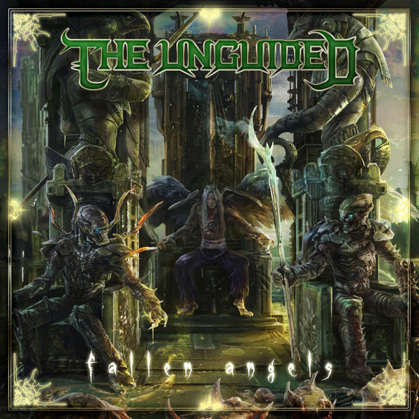
Fallen Angels
22 Grudzień 2014
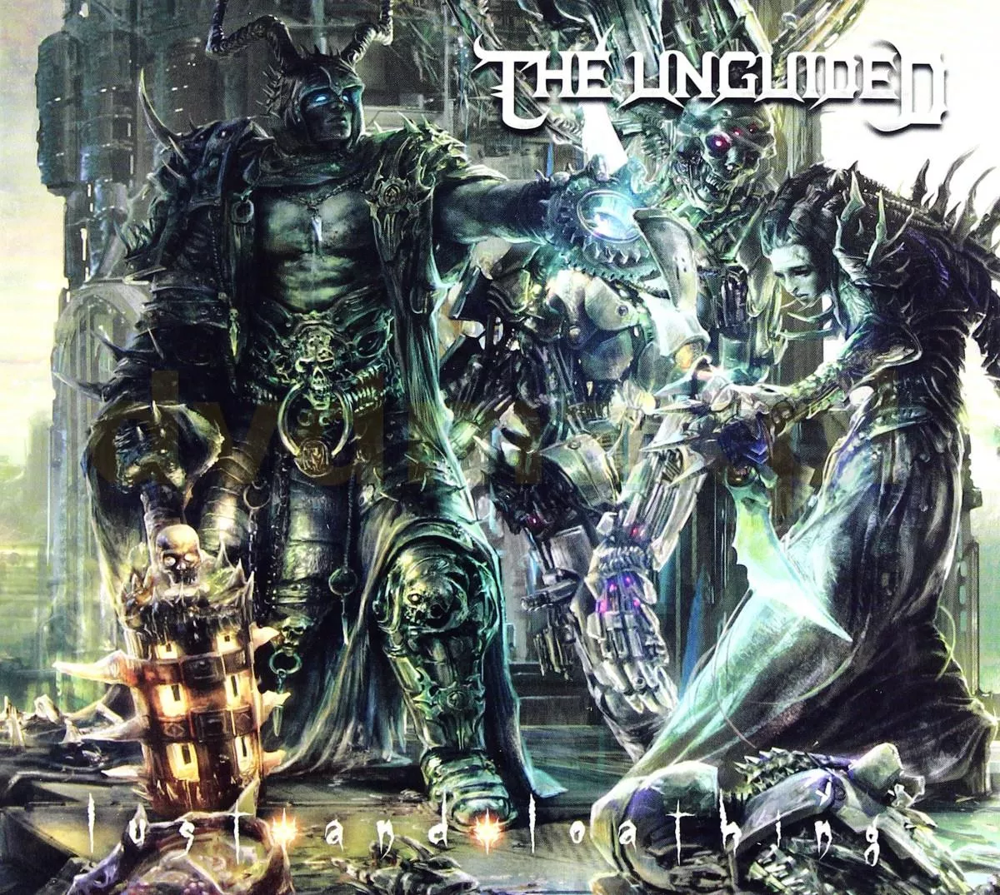
Lust and Loathing
26 Luty 2016
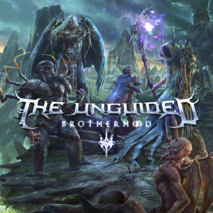
Brotherhood
23 Grudzień 2016
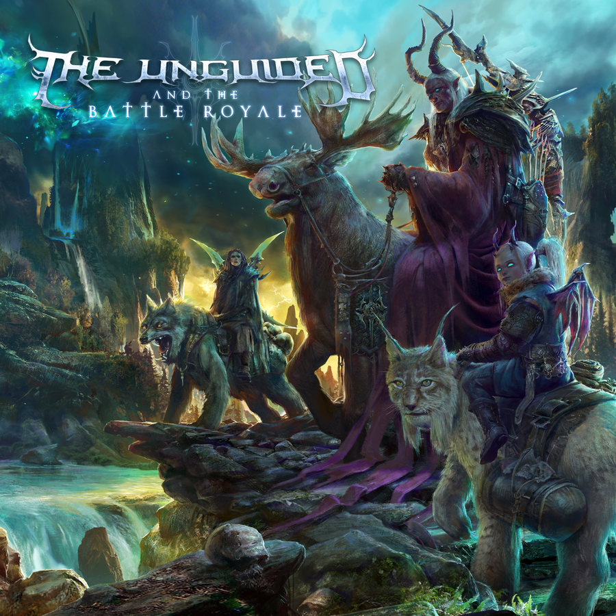
And the Battle Royale
10 Listopad 2017
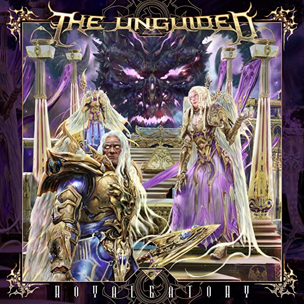
Royalgatory
21 Czerwiec 2019
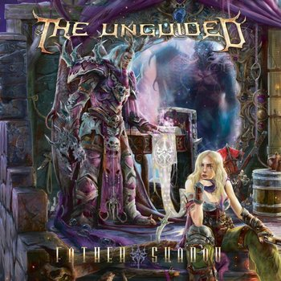
Father Shadow
9 Październik 2020